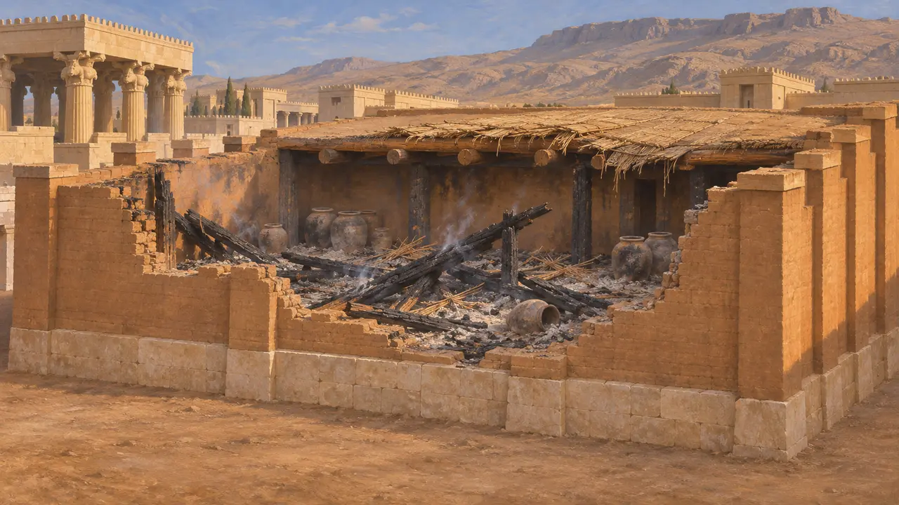
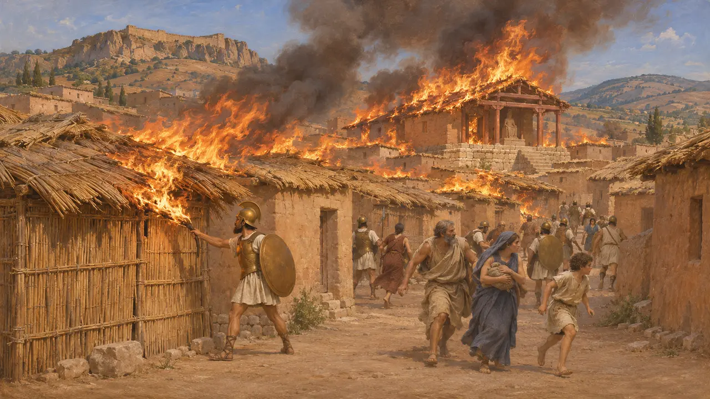
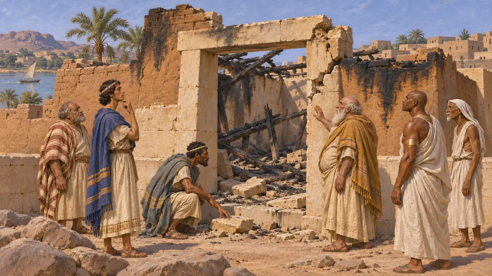
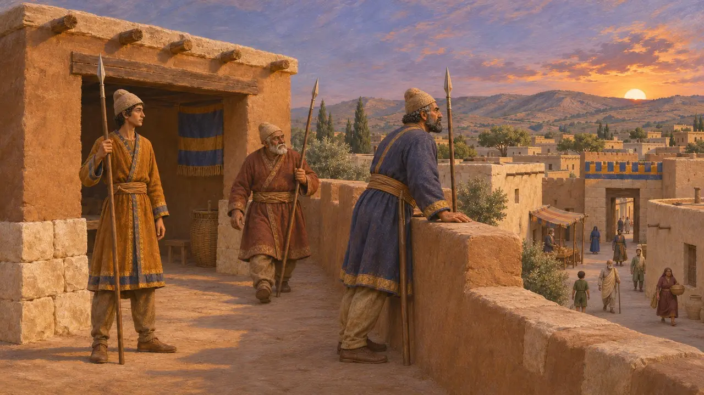
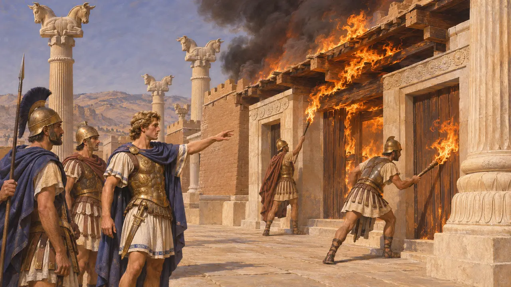

Beobachtungsposten
Nachtwache, Feuer und Instandsetzung in den Städten des Achämenidenreichs, 6.–5. Jahrhundert v. Chr.
Die Städte des Perserreichs waren aus Lehmziegeln gebaut, mit Dächern aus Holzbalken, Schilf und Matten, die leicht Feuer fingen. Garnisonen und örtliche Beamte hielten Wache, doch ein organisierter Brandschutz ist für diese Zeit nicht überliefert. Brach ein Feuer aus, bekämpften es wohl die Nachbarn mit Wasserkrügen, und die Schäden wurden danach von angeworbenen oder ausgehobenen Arbeitskräften behoben.
Im Spiel: Wächter gehen durch die Straßen, löschen Brände und bessern beschädigte Gebäude aus, alles in einem Dienst. Dies ist eine Dramatisierung: Vor Rom ist keine Feuerwehr bezeugt, und in dieser Zeit bekämpften wohl die Nachbarn Brände mit Wasserkrügen.

Dächer, die brannten
Zeitgenössisch belegtDie Ausgrabungen in Persepolis zeigen, wie persische Baumeister arbeiteten: Wände aus Lehmziegeln auf Steinfundamenten und Flachdächer auf Holzbalken, teils aus Zedernholz, mit Schilf und gestampfter Erde gedeckt. Das Schatzhaus und die Hallen fand man unter dicken Schichten aus Asche und verkohltem Holz vom Brand des Jahres 330. Die Wände blieben erhalten, wo Dächer und eingelagerte Güter verbrannten – ein Zeichen, dass das Holz die Schwachstelle des Lehmziegelbaus war.
E. Schmidt, Persepolis I, 1953; E. Schmidt, Persepolis II, 1957

Sardes brennt im Jahr 498 v. Chr.
Antiker BerichtHerodot berichtet, dass die meisten Häuser in Sardes aus Schilfrohr bestanden und selbst die Ziegelbauten Schilfdächer trugen. Als die Ionier und Athener 498 v. Chr. die Unterstadt einnahmen, steckte ein Soldat ein Haus in Brand. Das Feuer sprang von Dach zu Dach über die ganze Stadt und vernichtete den Tempel der Göttin Kybebe. Herodot fügt hinzu, dass die Perser diesen Brand später als Grund dafür anführten, griechische Tempel niederzubrennen.
Herodotus 5.101-102

Schäden und Instandsetzung in Elephantine
Zeitgenössisch belegtAramäische Papyri der Garnison von Elephantine berichten, dass 410 v. Chr. der Tempel Jahus, des Gottes der jüdischen Soldaten, von einheimischen Ägyptern mit Rückendeckung des persischen Befehlshabers Vidranga verwüstet und niedergebrannt wurde. 407 v. Chr. schrieb die Gemeinde an Bagavahya, den Statthalter von Juda, und bat um die Erlaubnis zum Wiederaufbau. Die Briefe zeigen, dass Instandsetzungen über Bittschriften an Beamte liefen, nicht über einen ständigen Baudienst. Das Ereignis liegt nach dem Zeitraum des Spiels.
B. Porten and A. Yardeni, Textbook of Aramaic Documents from Ancient Egypt 1, 1986 (TAD A4.7)

Wächter, keine Feuerwehrleute
Antiker BerichtGriechische Autoren beschreiben Nachtwachen und Wachposten gegen Feinde und Verräter. Aineias Taktikos, der im 4. Jahrhundert schrieb, gibt ausführliche Ratschläge zu Wachen und Patrouillen in einer bedrohten Stadt. Er erklärt auch, wie man von Angreifern gelegte Brände löscht, beschreibt aber keine ständige Feuerwehr. Die am besten belegte antike Feuerwehr sind die römischen vigiles, die Augustus laut Cassius Dio im Jahr 6 n. Chr. einrichtete.
Aeneas Tacticus, How to Survive under Siege; Cassius Dio 55.26

Wer Persepolis niederbrannte, und warum
UmstrittenSpätere Autoren sind sich über den Brand von Persepolis im Jahr 330 uneins. Arrian stellt ihn als Alexanders bewusste Rache für die Verbrennung athenischer Tempel durch die Perser im Jahr 480 v. Chr. dar. Plutarch und Diodor erzählen eine moralische Geschichte, in der die Hetäre Thaïs den betrunkenen Alexander nach einem Festmahl dazu anstiftete, den Palast in Brand zu setzen. Viele Historiker halten den Brand für eine politische Entscheidung und sehen in der Thaïs-Geschichte spätere Ausschmückung.
Arrian, Anabasis 3.18; Plutarch, Alexander 38; Diodorus 17.72
Quellen
- Herodotus 5.101-102
- E. Schmidt, Persepolis I, 1953
- B. Porten and A. Yardeni, Textbook of Aramaic Documents from Ancient Egypt 1, 1986 (TAD A4.7)
- Aeneas Tacticus, How to Survive under Siege
- Cassius Dio 55.26
- Arrian, Anabasis 3.18